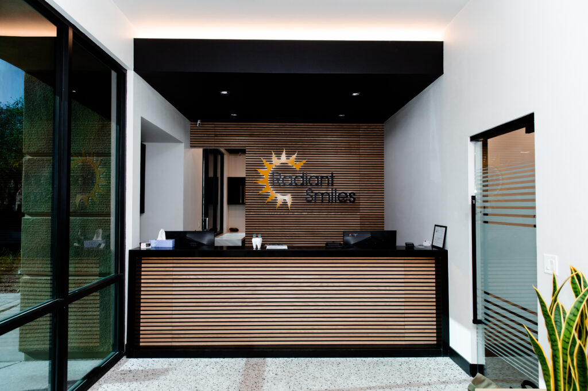

Cosmetic Dentistry in Las Vegas
Work on how your smile looks, handled by the same team that treats what sits underneath it. Start with what you see in the mirror.

Work on how your smile looks, handled by the same team that treats what sits underneath it. Start with what you see in the mirror.

A cosmetic result rests on the tooth beneath it. Shade, shape and spacing all depend on what the exam finds first.
Where cosmetic work is split out, a separately branded studio does the visible part and another practice treats the rest.
We do both in house, at our own offices, with named clinicians. One roster covers both, so the person planning veneers works in the same practice as the rest.
Dental visits track coverage directly.
The ADA Health Policy Institute reports that 55% of adults aged 65 and older have no dental benefits, fetched 30 July 2026. In 2023, 53% of privately insured adults had a dental visit, against 16% of those with no dental insurance.
Our Lake Mead office is rated 4.5 stars across 506 patient reviews on Birdeye, fetched 30 July 2026.

Seven offices across the valley:
7469 W. Lake Mead Blvd., Suite 270, Las Vegas 89128
1825 S. Nellis Blvd., Las Vegas 89107
8961 W. Sahara Ave., Suite 108, Las Vegas 89117
5195 Camino Al Norte Rd., North Las Vegas 89031
2633 W. Horizon Ridge Pkwy., Suite 130, Henderson 89052
6311 N. Decatur Blvd., Suite 140, Las Vegas 89130
5095 S. Blue Diamond Rd., Suite 105, Las Vegas 89139
Find out what veneers or whitening would actually involve for your teeth. Book an appointment, or call the office you would visit.